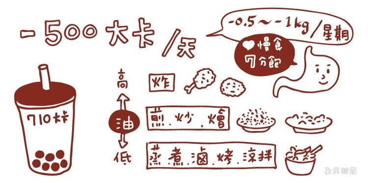
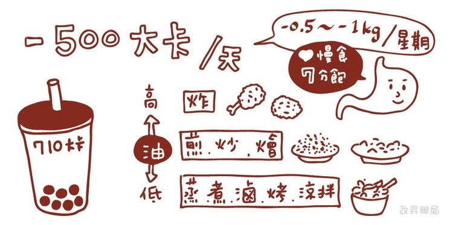
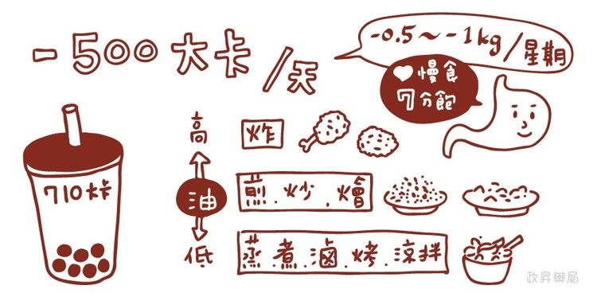

Home
☰

 

十大原則：
1. 勿吃太鹹，以免減緩體重下降。
2. 減重速度不宜太快，以現有需要熱量每天減少約 500 卡熱量，一週約可減輕體重 0.5 公斤。
3. 減緩進食速度，避免一次吃太多，並且進餐時選擇進食順序，例如：喝湯、吃青菜、吃肉、最後吃飯。
4. 懂得拒絕別人給你非飲食計畫中的食物。
5. 詳細記錄一週內所吃食物的所有種類、份量及吃的時間，地點和動機，最好長期找營養師修正飲食情形。
6. 對於六大類食物要適量攝取，不可採用不健康的低醣高蛋白或長期高纖維飲食（＞50 克／日），以免造成身體的傷害。
7. 避免食用高熱量、高糖的精緻食物，同時不鼓勵習慣性喝酒。
8. 克制食慾，分清楚是肚子餓還是想吃東西（可選擇體積大熱量低的食物）。
9. 改變烹調方式，宜採用水煮、蒸、滷的烹調取代油炸、煎、炒，而且最好經常自己在家製備食物，避免長期外食。
10. 多吃高纖食物，每天至少吃30公克的纖維素。

影片提供：